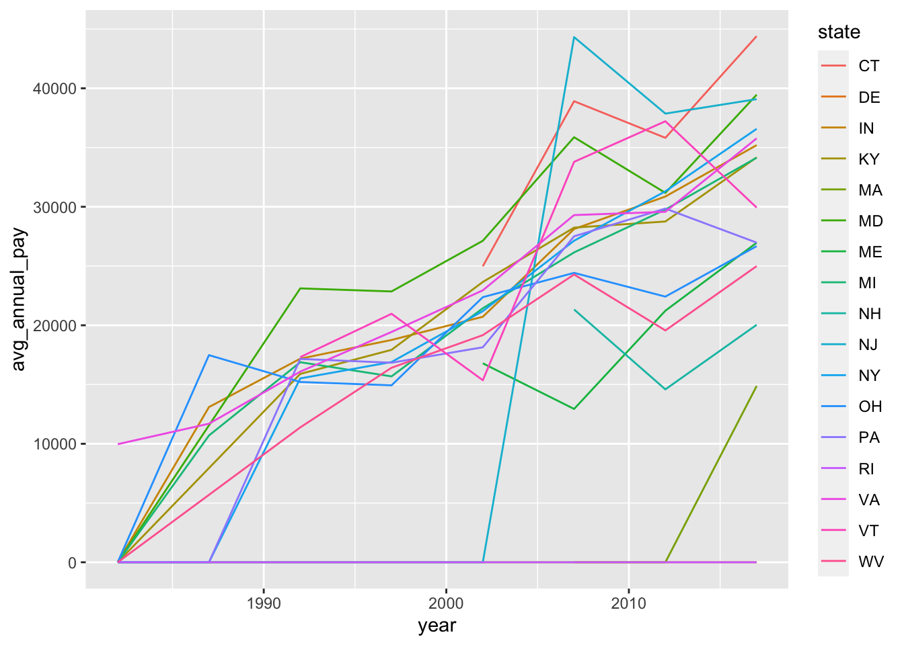
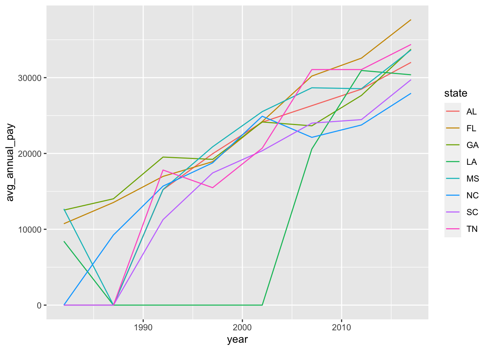
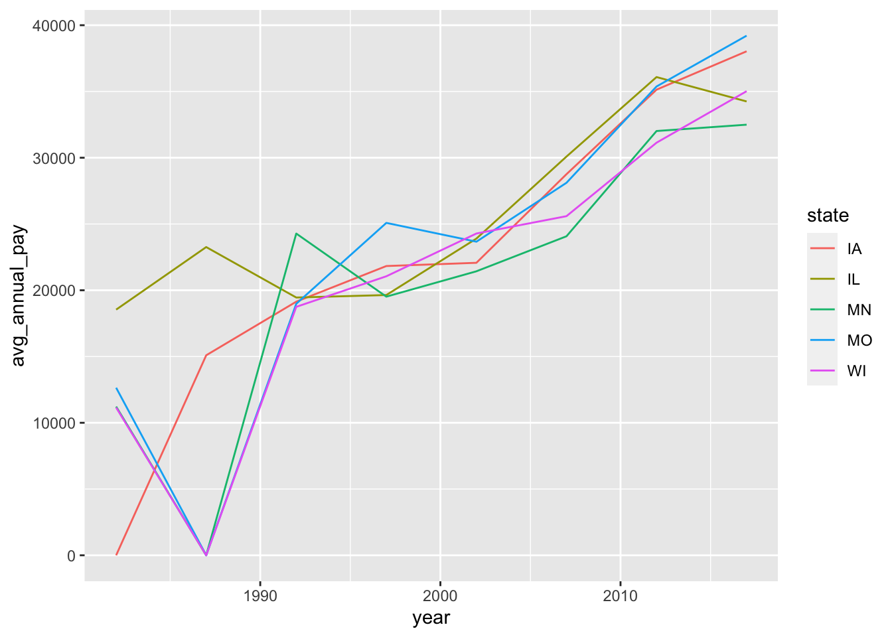
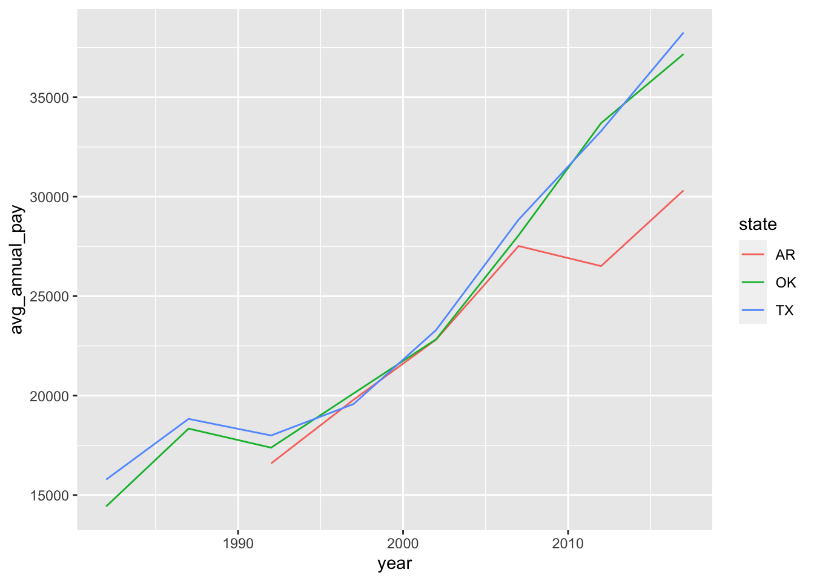
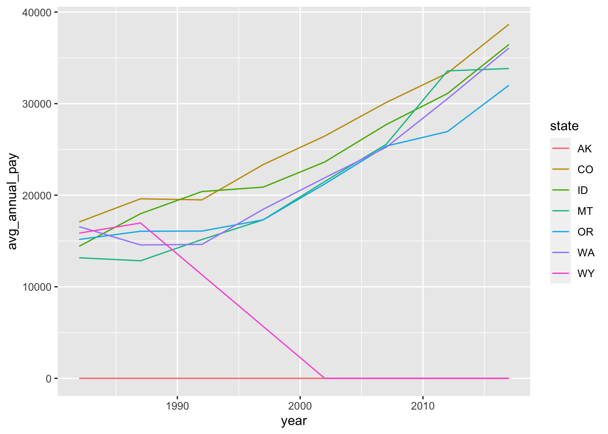
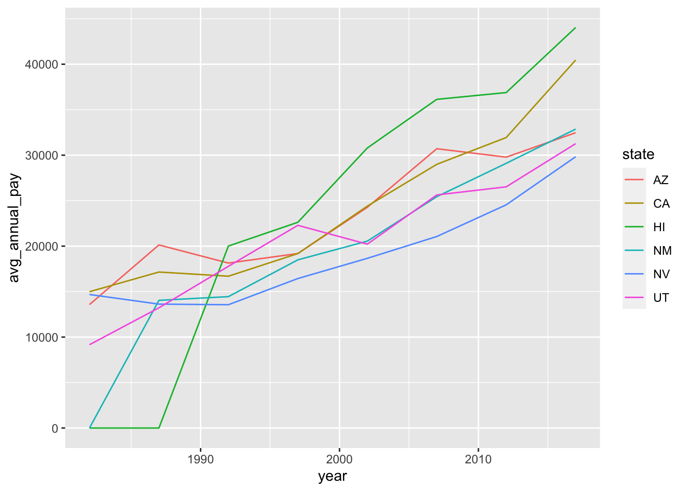
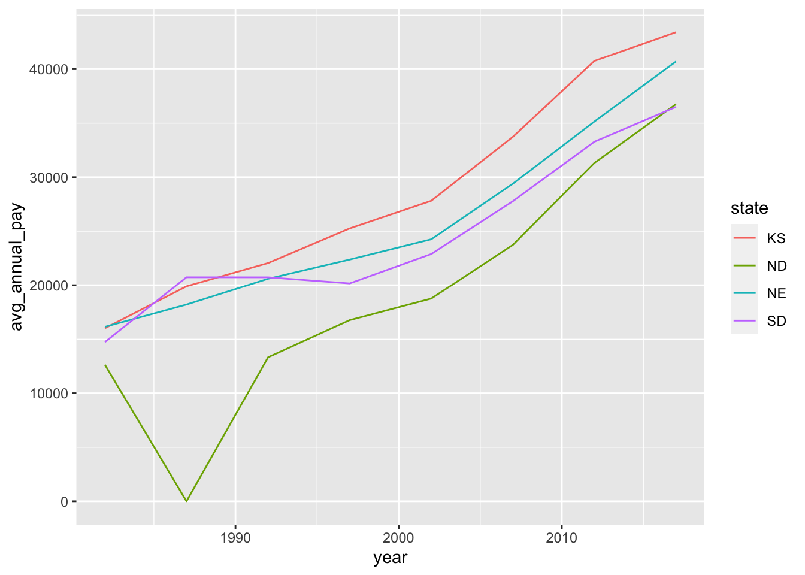

knitr::opts_chunk$set(echo = TRUE, warning = F, message = F)# suppressPackageStartupMessages(library(tidyverse))
library(tidyverse)
library(readxl)
#create a blank list
LB <- list()
#start the loop over length of n, sheets #1 through 8 use the {} to indicate the start and end of the loop
for (i in 1:8){
LB[[i]] <- read_xlsx("Labor_Beef.xlsx", sheet = i, col_names = T)
}
#do.call with rbind says to do the rbind operation over every element in the list LB,
LB.df <- do.call(rbind, LB)# in LB.df get rid of puerto rico and virigin islands
LB.df<- LB.df[LB.df$area_title !="Puerto Rico -- Statewide" & LB.df$area_title !="Virgin Islands -- Statewide",]
#view(LB.df)
# remove all the " -- Statewide" form the area_title column
LB.df$area_title <-gsub(" -- Statewide", "", as.character(LB.df$area_title))
view(LB.df)
unique(LB.df$area_title)## [1] "Alabama" "Alaska" "Arizona" "California"
## [5] "Colorado" "Florida" "Georgia" "Hawaii"
## [9] "Idaho" "Illinois" "Indiana" "Iowa"
## [13] "Kansas" "Kentucky" "Louisiana" "Maryland"
## [17] "Massachusetts" "Michigan" "Minnesota" "Mississippi"
## [21] "Missouri" "Montana" "Nebraska" "Nevada"
## [25] "New Jersey" "New Mexico" "New York" "North Carolina"
## [29] "North Dakota" "Ohio" "Oklahoma" "Oregon"
## [33] "Rhode Island" "South Carolina" "South Dakota" "Texas"
## [37] "Utah" "Virginia" "Washington" "West Virginia"
## [41] "Wisconsin" "Wyoming" "Pennsylvania" "Tennessee"
## [45] "Arkansas" "Vermont" "Connecticut" "Maine"
## [49] "Delaware" "New Hampshire"#rename the colum area_title to state for simplicty
#names(df)[names(df) == 'old.var.name'] <- 'new.var.name'
names(LB.df)[names(LB.df) == 'area_title'] <- 'state'
#Turn the state name into an abbreviation
LB.df$state<-state.abb[match(LB.df$state,state.name)]
unique(LB.df$state)## [1] "AL" "AK" "AZ" "CA" "CO" "FL" "GA" "HI" "ID" "IL" "IN" "IA" "KS" "KY" "LA"
## [16] "MD" "MA" "MI" "MN" "MS" "MO" "MT" "NE" "NV" "NJ" "NM" "NY" "NC" "ND" "OH"
## [31] "OK" "OR" "RI" "SC" "SD" "TX" "UT" "VA" "WA" "WV" "WI" "WY" "PA" "TN" "AR"
## [46] "VT" "CT" "ME" "DE" "NH"# now add a column that specifies the region using a nested if else statement
LB.df$region <-
ifelse(
LB.df$state == "ME" |
LB.df$state == "MA" |
LB.df$state == "NY" | LB.df$state == "CT" | LB.df$state == "DE" |
LB.df$state == "RI" |
LB.df$state == "PA" |
LB.df$state == "VT" | LB.df$state == "NH" | LB.df$state == "NJ" |
LB.df$state == "MD" |
LB.df$state == "VA" |
LB.df$state == "WV" | LB.df$state == "KY" | LB.df$state == "OH" |
LB.df$state == "IN" | LB.df$state == "MI",
'1',
ifelse(
LB.df$state == "FL" |
LB.df$state == "GA" |
LB.df$state == "SC" | LB.df$state == "NC" | LB.df$state == "TN" |
LB.df$state == "MS" |
LB.df$state == "LA" | LB.df$state == "AL",
'2',
ifelse(
LB.df$state == "WI" |
LB.df$state == "IL" |
LB.df$state == "MO" | LB.df$state == "IA" | LB.df$state ==
"MN",
'3',
ifelse(
LB.df$state == "TX" | LB.df$state == "AR"
| LB.df$state == "OK",
'4',
ifelse(
LB.df$state == "CO" | LB.df$state == "WY" |
LB.df$state == "MT" |
LB.df$state == "WA" |
LB.df$state == "OR" | LB.df$state == "AK" | LB.df$state == "ID",
'5',
ifelse(
LB.df$state == "CA" |
LB.df$state == "NV" |
LB.df$state == "UT" | LB.df$state == "AZ" | LB.df$state ==
"NM" |
LB.df$state == "HI",
'6',
ifelse(
LB.df$state == "ND" | LB.df$state == "SD" | LB.df$state == "NE" |
LB.df$state == "KS",
'7',
'BAD'
)
)
)
)
)
)
)#create a list in a loop
LBR <- list()
#start the loop over length of n, sheets #1 through 8 use the {} to indicate the start and end of the loop
for (i in 1:7){LBR[[i]]<-LB.df %>% filter(region == i)}
for (i in 1:7) {
print(ggplot(LBR[[i]], aes(x=year)) +
geom_line(aes(y = avg_annual_pay, color = state)))}